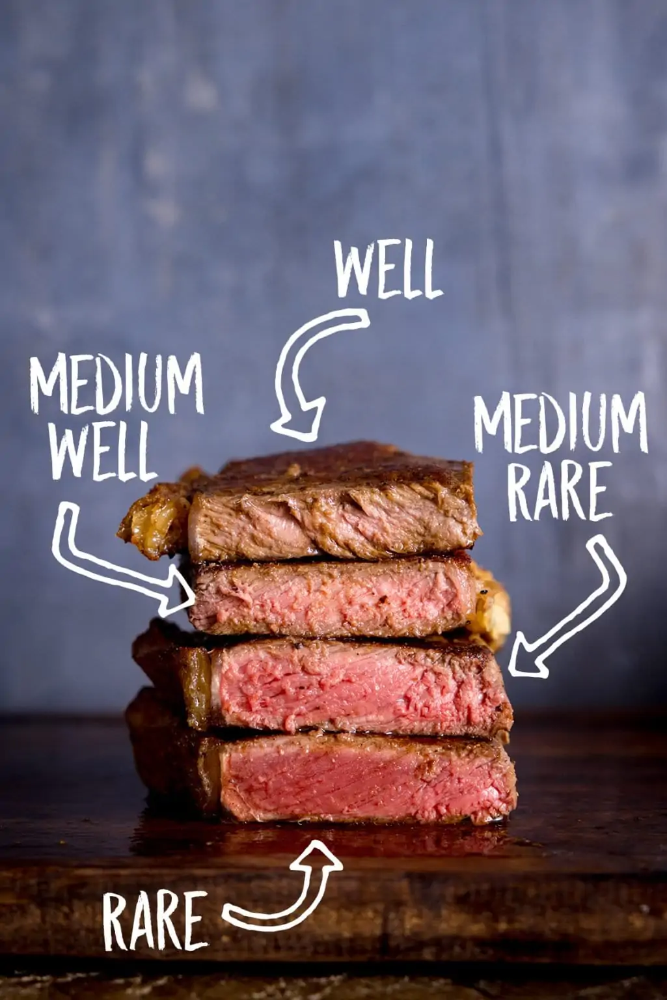
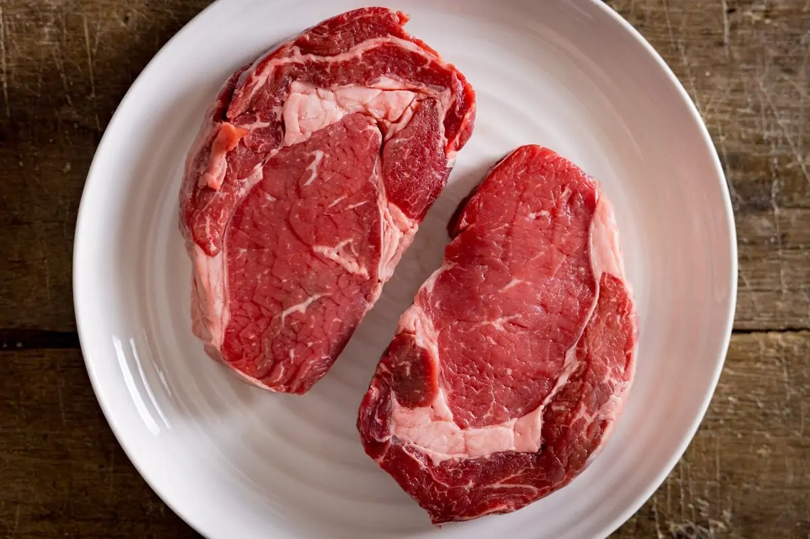
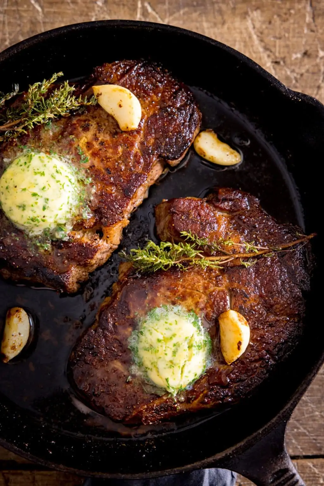

The Perfect Steak
Home

About the recipe
Cooking a steak can be overwhelming. How long to cook? What about
seasoning and pan heat?
I'm going to answer those questions and more to get you cooking
steak like a pro!
What you need:

- Steak, I prefer the New York Strip because I'm boujee
- Steak seasoning, or just salt and black pepper
- Butter
- Optional: a few cloves of garlic and fresh thyme or rosemary
sprigs
How to cook steak
- First you want to take the steak out of the fridge and let
it get to room temperature, about 30 minutes.
- After it's at room temp, you want to genrously season it
on both sides
- Now you want to add steak to pan at medium-high heat
- Add a little bit of butter into pan and add steak to pan,
cook for about 4 minutes
- Flip steak over and add more butter and baste the steak with
the butter for the last few minutes of cooking
- Take out steak and wrap in aluminum foil and let sit for
about 5-10 minutes
